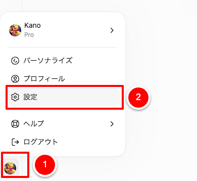
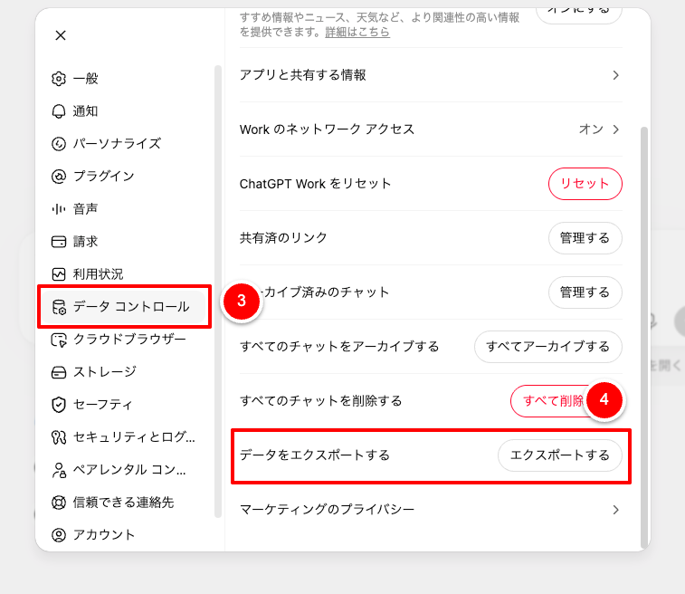
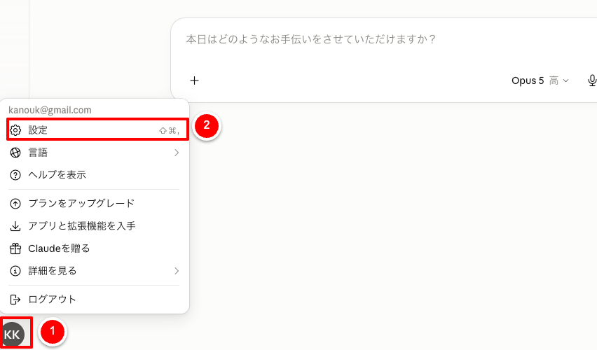
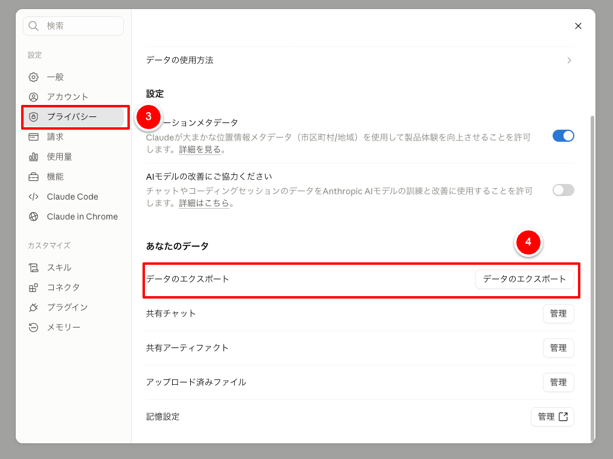
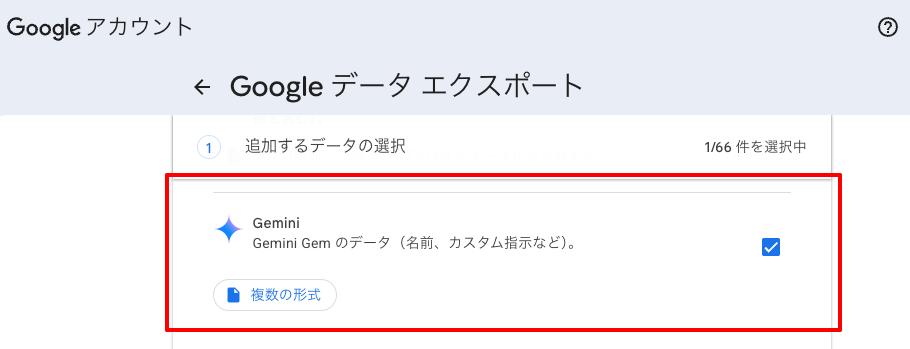

マイ アクティビティ 必須
「すべてのアクティビティ データが含まれます」を開き、いったん選択を解除して「Gemini Apps」だけを選びます。
AI Data Export Guide
ChatGPT・Claude・Geminiに残っている会話や設定データを、手元のファイルとして保存するための手順です。
設定画面から書き出す
ChatGPTのWeb版へログインして操作します。Free・Plus・Proの個人アカウントで利用できます。


設定画面から書き出す
ClaudeのWeb版またはデスクトップアプリから操作します。スマートフォンアプリからは書き出せません。


Google Takeoutから書き出す
Geminiを使っているGoogleアカウントで、Google データ エクスポートを開きます。
「すべてのアクティビティ データが含まれます」を開き、いったん選択を解除して「Gemini Apps」だけを選びます。
自分で作成したGemの名前やカスタム指示なども保存したい場合に選びます。
